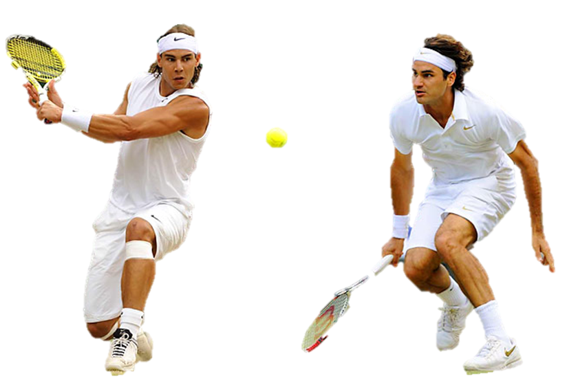

Chord Diagram
This chord diagram shows the matches played between the most active top 10 right-handed and left-handed tennis players in the US Open from 2003 to 2013.
RIGHT-handed players are colored as blue and LEFT-handed players are colored as red. A darker shade means that the corresponding player participated more frequently in all the matches throughout the 11 years.The maximum on each axis represents the number of winning matches for each player.
The chords link the two players in each match. The thickness of chords between players encodes the number of matches that one player won.
This diagram reveals asymmetries: if a chord is tapered, there are more matches a player won against his opponent than vice versa. For example, Rafael Nadal beat Novak Djokovic twice and was defeated by him once. So the end of chord from Rafael Nadal is thicker than the end from Novak Dyokovic.
Mouse over a player's name to focus on his opponents and the results of each match.
Right-handed and left-handed tennis players differ in terms of strength and habits. And research shows that Left-handed tennis players have the advantage over their right-handed opponents as they are generally believed to possess better overall spatial, motor and attention functions. But is that true for the top players? How often did top right-handed players and left-handed players meet in the US Open and how did they perform?
The chord diagram represents all the matches played between the top 10 most frequent right-handed and left-handed players in the 2003-2013 US Open.
The circle is split up into 20 players with the arc length of each player scaled to the total number of wins. The numbers along the outer rim of the chord Diagram give the total of wins. This shows that Roger Federer won the most with 19 wins and Novak Djokovic is the second with 11 wins.
The chords between the arcs visualize the wins between players in both directions. For example, the big dark blue chord connecting Roger Federer and Novak Djokovic in the upper right section shows 3 matches that Federer won against Djokovic and 2 matches Djokovic won from Federer. Even more so, most of the chords at Roger are extremely thin at the other side, thus Roger has won virtually every match (except Tomas Berdych and Tommy Robredo), and he won every match against his left-handed opponents. Interestingly, Federer never played with Nadal, the most active left-handed player, in the US Open.
To clarify the right-handed and left-handed players as well as their frequency in all the matches, not limited only to these players, through 11 years, each chord has the darker colour of player that showed up more than others. With this in mind, we can immediately see that even Andy Roddick is a more frequent player than Andy Murray, he did not win as many as the latter among these top players.
Finally, this analysis shows no distinct advantage of top left-handed players over right-handed ones except for Rafael Nadal who seemed to be the most unbeatable opponents of the right-handed players.
